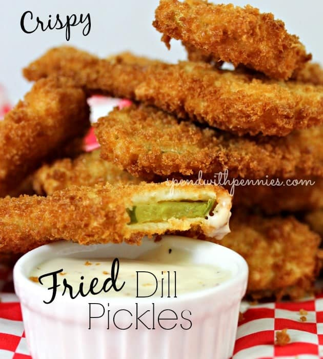

Fried Pickles

Ingredients
Pickles
- Sandwich sliced dill pickles about 12 slices
- 1-2 cups Panko Breadcrumbs
- Oil for frying
Batter
- 1 cup all purpose flour
- 1 cup milk
- 1 teaspoon baking powder
- 1 egg
- 1 teaspoon paprika
- ½ teaspoon black pepper
- ½ teaspoon dill optional
Steps
- Preheat oil to 360-370°F.
- Combine all batter ingredients and stir until smooth, let sit at
least 5 minutes.
- Dab pickle slices on paper towels to dry them. Place about ½ cup
of Panko bread crumbs in a bowl (add more as needed). (If they get
wet, they don’t stick so it’s best to work in small batches.)
- Dip each pickle slice in the wet batter and then gently toss in the
bread crumbs, let sit for a minute or so, this will allow the crumbs
to stick better.
- Fry in small batches for 3-4 minutes or until brown and crispy.
- Serve with ranch dip.